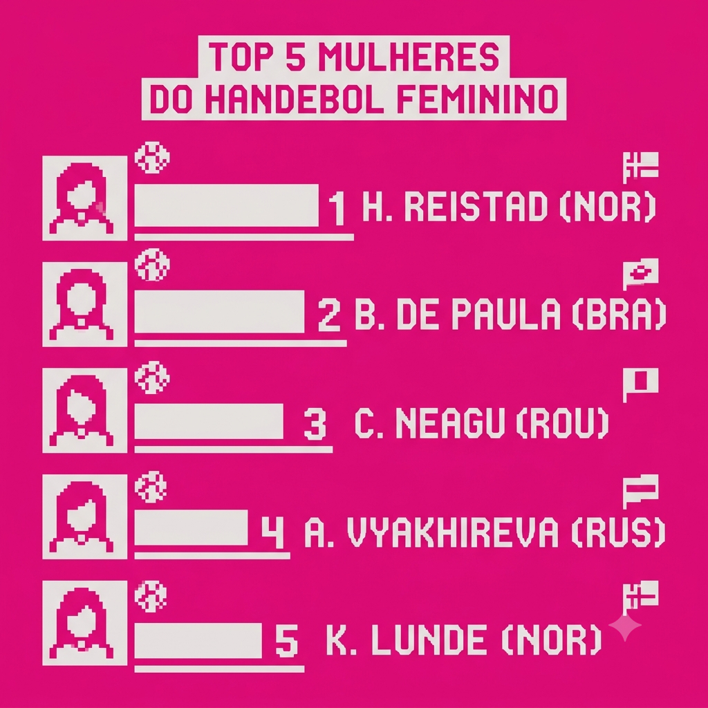
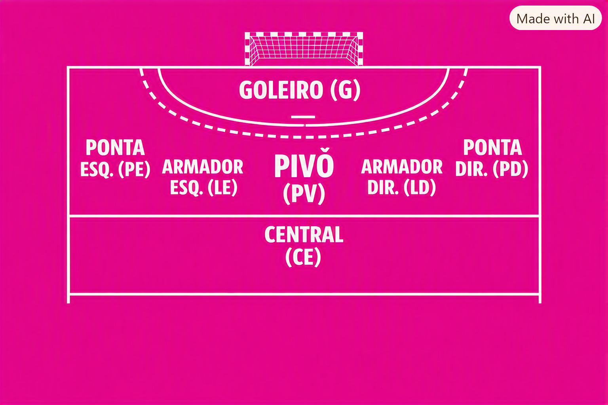

Top 5 - Melhores Atletas do Handebol
Por: Maria Vitoria
- 1° - Henny Reistad (Noruega)
- 2° - Bruna de Paula (Brasil)
- 3° - Cristina Neagu (Romênia)
- 4° - Katrine Lunde (Noruega)
- 5° - Anna Vyakhireva (Rússia)
Conheça handebol atravessa de mim

Por: Maria Vitoria

Por: Maria Vitoria
No handebol, o goleiro defende o gol e inicia os contra-ataques. O armador central organiza as jogadas e comanda o ritmo do time. Os armadores laterais se destacam pela força e arremessos de longa distância. Os pontas usam a velocidade para atacar pelas laterais em ângulos difíceis, enquanto o pivô briga pelo espaço no meio da defesa para receber a bola e finalizar.